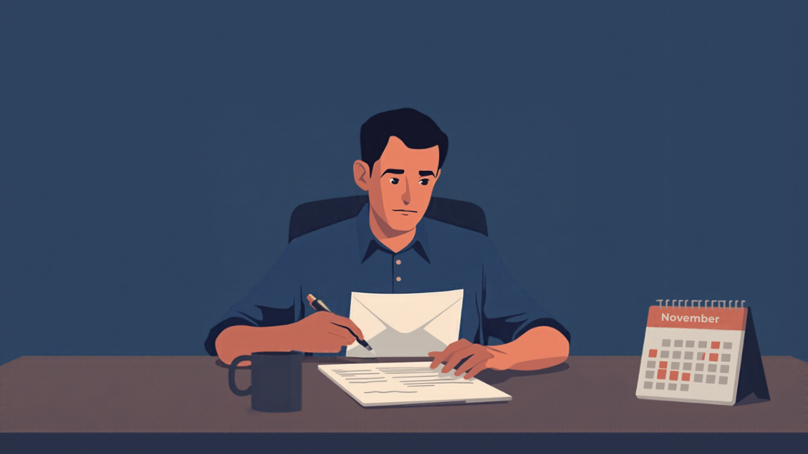
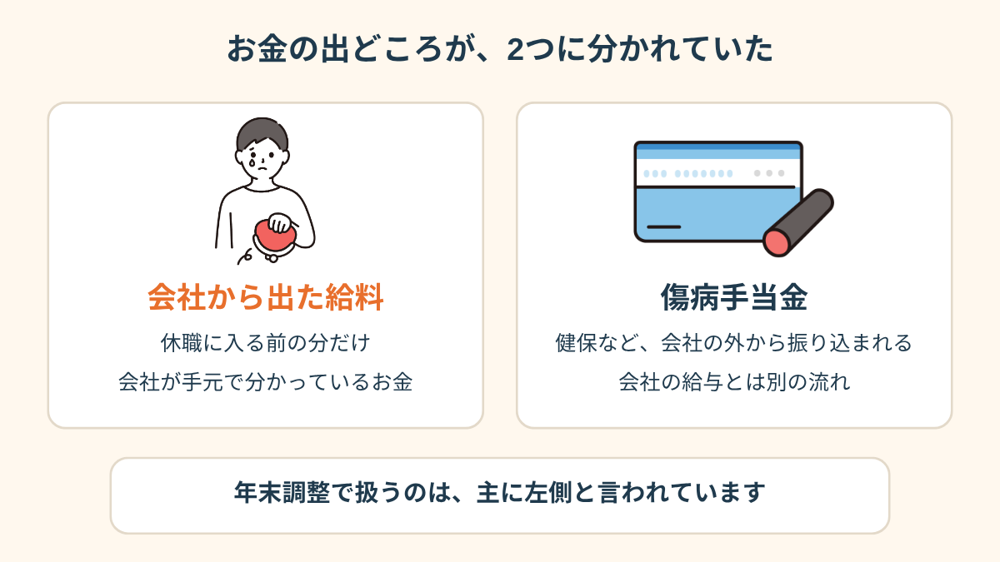
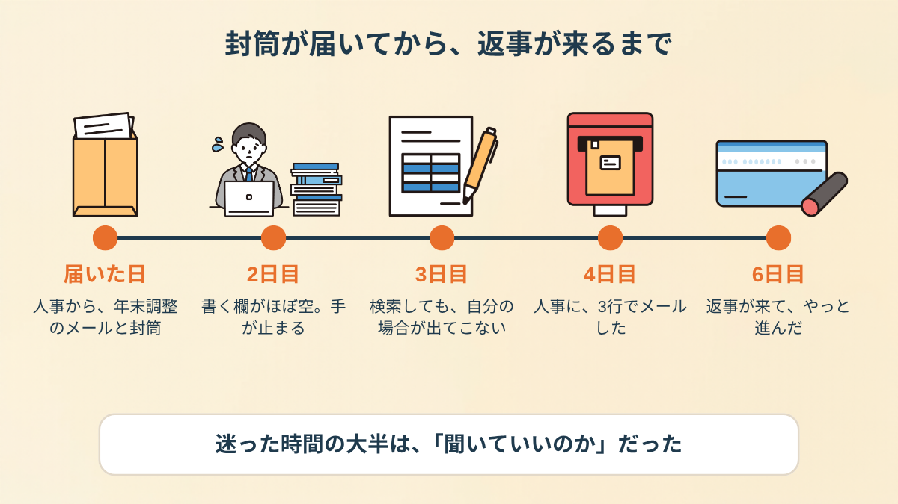
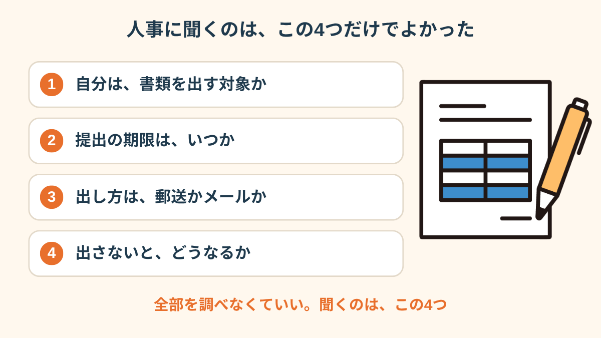
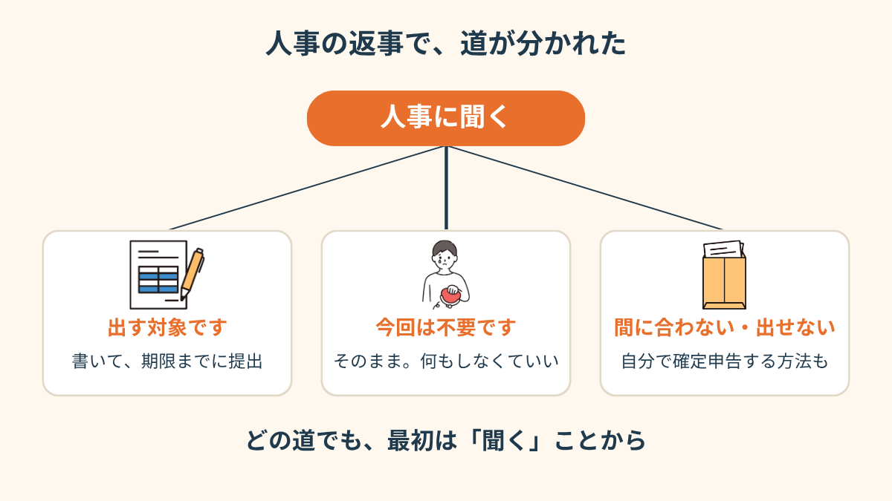
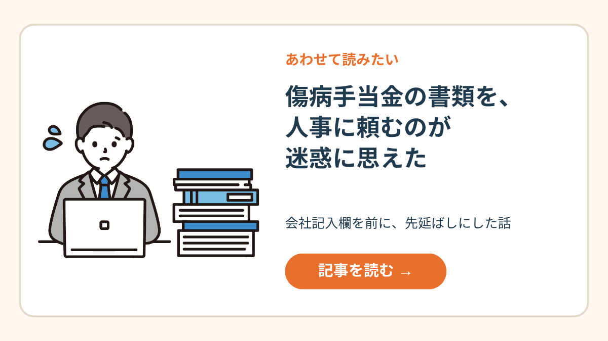
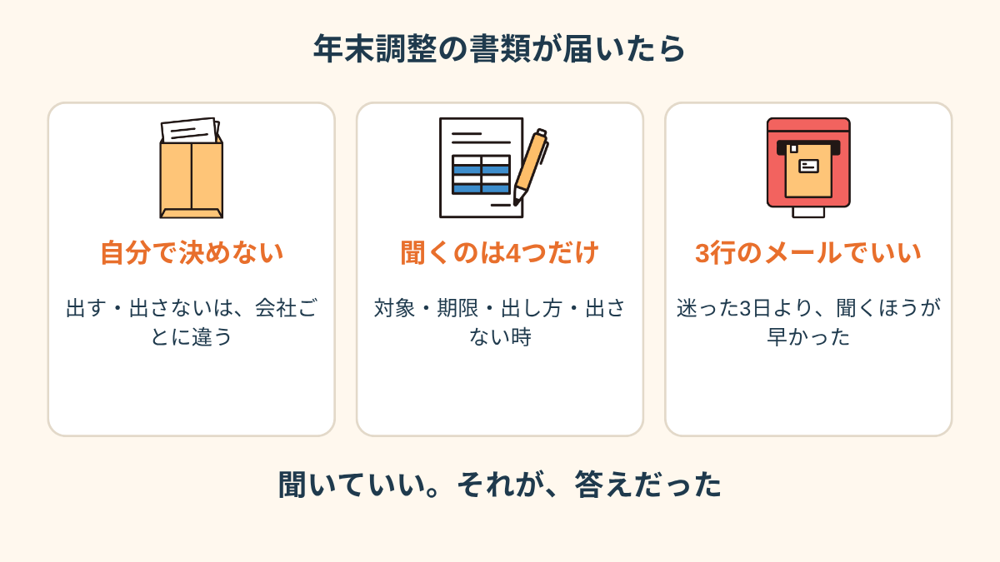

10月の最終週、郵便受けに分厚い封筒が入っていた。
差出人は、休職中の会社の人事部。
開けたら「年末調整のお知らせ」と、見慣れた書類が3枚。
そして、どこにも書くことがなかった。
PR


封筒は、帰省のあとの郵便物の山に混ざっていた
休職して5ヶ月目に入ったところでした。
給料は出ていなくて、傷病手当金だけで暮らしている状態です。
封筒は、ほかのチラシと一緒にテーブルに置いて、そのまま2日そっとしておきました。
見たくなかった、が正直なところです。
会社からの封筒って、開ける前から胃のあたりが重くなるんですよね。

会社からの郵便を開けるのに、体力がいる時期ってあります。2日置いたことを、サボりだと思わなくて大丈夫です。まめざる

封筒を開けたのは、届いて2日目の夜だった
書く欄が、ほとんど空白だった
中に入っていたのは、扶養控除等申告書と、保険料控除申告書と、人事からの案内。
期限は11月の頭、と書いてあります。
書こうとして、ペンが止まりました。
今年の給料は、休職に入る前の数ヶ月分だけ。
傷病手当金は、会社の給料とは別の入り口から入ってくるお金で、どの欄に書けばいいのか分からない。

お金の出どころが2つに分かれていると気づいたら、少し整理できた
どっちが正しいのか、自分では分からない。
分からないまま書いたら、あとで何か言われるのかもしれない。
そう思うと、余計に手が出ませんでした。
「経理の仕事をしてたのに、自分の年末調整の書類は書けなかったんです。人のは何十人分もやってたのに。休職してる自分がどの扱いなのか、頭が真っ白になりました」
40代・女性（うつ病で休職・経理職）
出さなくていいのか、3日間ずっと考えた
その夜は、結局白紙のまま封筒に戻しました。
翌日も、その次の日も、封筒は視界の端にいる。
「出さなくていいのかな」と「出さないと何か起きるのかな」を、行ったり来たりしました。
検索すると、会社員向けの書き方ばかり出てきて、休職中の自分の場合は見つからない。

迷った6日間。時間のほとんどは「聞いていいのか」で使っていた
相談の一コマ

相談者
出さなくていいなら、それでいいんです。でも、出さなかったあとのことが分からなくて。
まめざる
分からないのが、いちばん落ち着かないところなんですね。調べても出てこなかった、というのは、どのあたりでしたか？
相談者
休職中で、給料ゼロの人の書き方、みたいなのが一つもなくて。みんな普通に働いてる前提なんです。
まめざる
そうだったんですね。検索で出てこないなら、答えを持っているのは会社の人事のほうかもしれません。
i
年末調整は会社が行う手続きで、休職中の人の扱いは、会社や休職の時期によって違うとされています。この記事は一つの体験で、「あなたの場合はこう」という答えではありません（2026年10月時点の情報です）。
人事に聞くのは、4つだけにした
4日目の夜、「聞くしかない」と観念しました。
でも、何から聞けばいいのか分からない。
そこで、聞くことを紙に書き出して、4つまで絞りました。

全部を調べなくていい。聞くのは、この4つだけ
メールは3行にしました。
「休職中で今年の給与は〇月分までです。年末調整の書類は提出の対象でしょうか。対象の場合、期限と提出方法を教えてください」。
お願い口調にしすぎず、事実だけ聞くようにしたら、送信ボタンを押す指が少し軽くなりました。
「書き方を教えてください」より「対象かどうかを教えてください」のほうが、答える側も一言で返せます。まめざる
i
「今の自分の気持ちが、よく分からなくなった」というときは、2問で答えられる
気持ちスキャン診断もあります。よかったら覗いてみてください。
返事で、道が分かれた
返事は2日後に来ました。
中身は短くて、「対象です。この欄だけ書いて郵送してください」というものでした（人によって、この返事は変わると思います）。

人事の返事で、やることが変わる。どの道でも、最初は「聞く」ことから
拍子抜けでした。
6日間悩んで、答えは2行。
でも、その2行が来るまでは、ずっと胃のあたりが重かった。
「返事が来てみたら『この欄だけで大丈夫です』って、それだけでした。何日もかけて一人で考えてた時間、返してほしいくらいでした。でも、聞かなかったらまだ悩んでたと思います」
30代・男性（適応障害で休職・営業職）

傷病手当金の会社記入欄を、人事に頼めなかった話 →
!
この記事は、実際にあった複数の話を組み合わせて書いたものです。年末調整や税金の扱いは、会社や休職の時期、収入の状況によって変わります。最終的な判断は、会社の人事・総務、税務署（国税庁）にご確認ください（2026年10月時点の情報です）。
Q. 休職中でも、年末調整の書類は出す必要がありますか？
一律には言えません。年末調整は会社が行う手続きで、休職中の人の扱いは会社や休職の時期、その年にもらった給与の有無によって変わるとされています。まず人事・総務に「自分は提出の対象か」を聞いてみてください（2026年10月時点の情報です。最新の内容は国税庁や税務署、会社でご確認ください）。
Q. 傷病手当金は、年末調整の書類に書くものですか？
傷病手当金は、会社が支払う給与とは別に健康保険などから支払われるお金で、給与所得とは扱いが違うとされています。ただ、実際にどの書類のどこに関わるかは状況で変わるため、人事や税務署に確認するのが確実です（2026年10月時点）。
Q. 書類を出さなかったら、どうなりますか？
年末調整で受けられる控除が反映されず、自分で確定申告をする形になる場合があるとされています。出す・出さないで損得が変わることもあるので、期限の前に人事に聞いておくと安心です。最終的な判断は、会社や税務署の案内に従ってください。
Q. 人事に聞くのは、気が引けて難しいです。
休職中は特に、お金や書類のことを聞きにくいですよね。「書き方の相談」ではなく「自分は対象かどうか、期限はいつか」という事実の確認に絞ると、聞くほうも答えるほうも楽になると感じる人がいます。メールなど文面に残る形にすると、あとで見返せます。

聞いていい。それが、答えだった
PR


まずは無料で相談してみる
書類のことも、お金のことも、うまく説明できなくて大丈夫です。一緒に整理していきましょう。
無料相談はこちら
この記事に、聞いてみたいことはありますか？
「自分の場合はどうなんだろう」と思ったことを、気軽に書いてみてください。いただいた質問は個別にお返事したうえで、匿名で記事にすることがあります。
お
おのざる
mimemime代表。就労支援の現場経験をもとに、障がいのある方の働く不安に寄り添う記事を執筆。